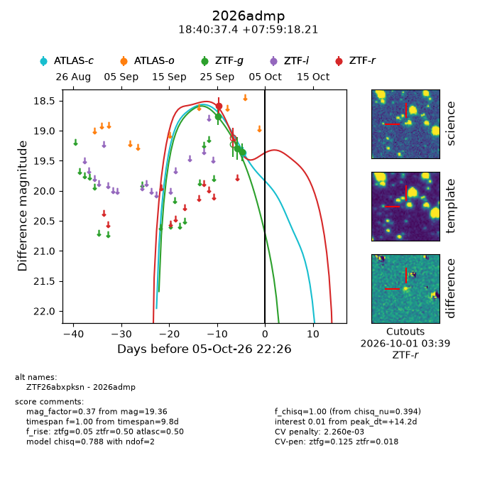
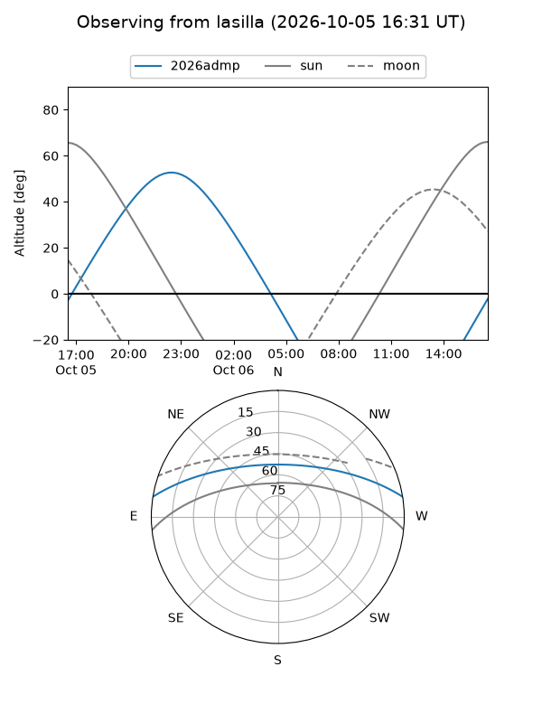
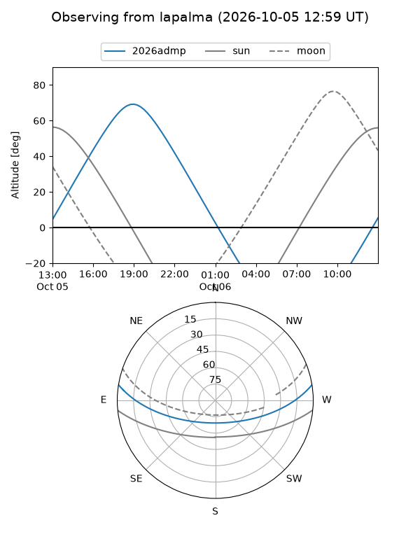
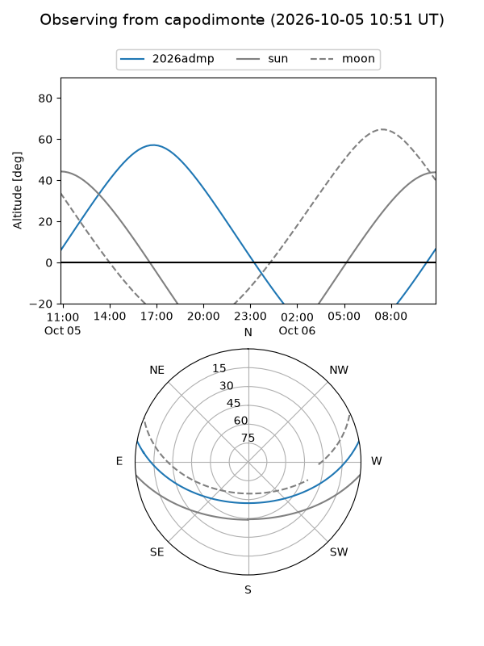
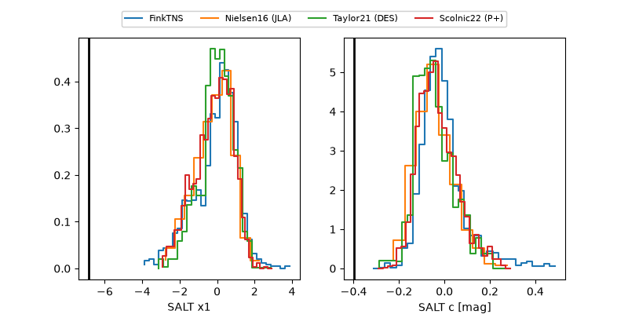

2026admp
Target 2026admp at 2026-10-06 10:23
Aliases and brokers:
FINK-ZTF: ztf.fink-portal.org/ZTF26abxpksn
Lasair-ZTF: lasair-ztf.lsst.ac.uk/objects/ZTF26abxpksn
ALeRCE-ZTF: alerce.online/object/ZTF26abxpksn
YSE-PZ: ziggy.ucolick.org/yse/transient_detail/2026admp
TNS name: wis-tns.org/object/2026admp
Direct TNS query: direct search
alt names
ZTF26abxpksn (ztf,fink_ztf)
2026admp (tns,yse)
Coordinates:
equatorial (ra, dec) = 280.1560,+7.98839
equatorial (HMS+DMS) = 18:40:37.45,+07:59:18.21
galactic (l, b) = (38.8412,+6.02368)
Flags:
TNS type: nan
peak dt: +14.7
likely cv: !!
Photometry:
last atlasc=19.36, ztfg=19.36, ztfr=18.58
1 atlasc, 3 ztfg, 1 ztfr detections
Lightcurve

Visibility



Additional plots
